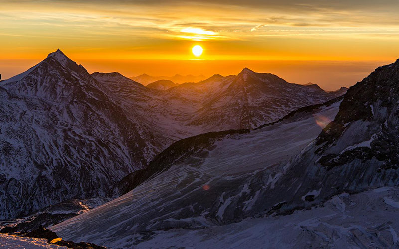
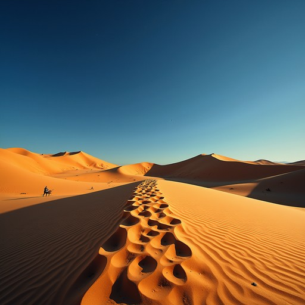
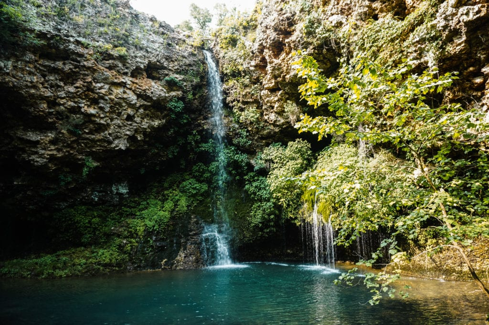
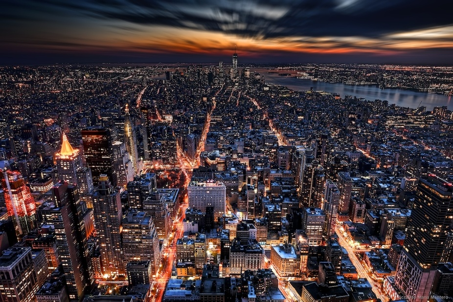
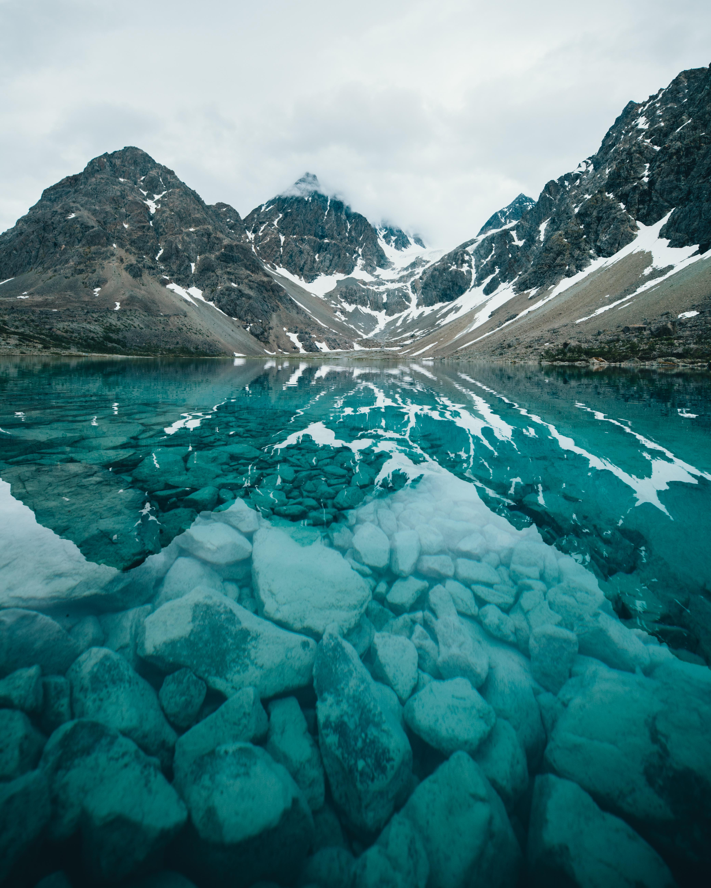
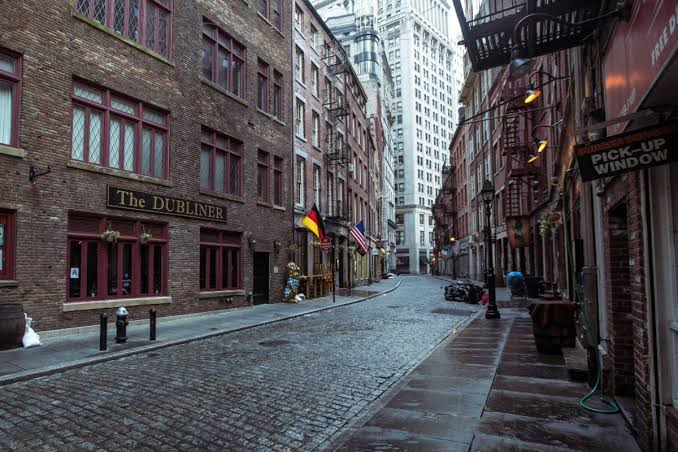
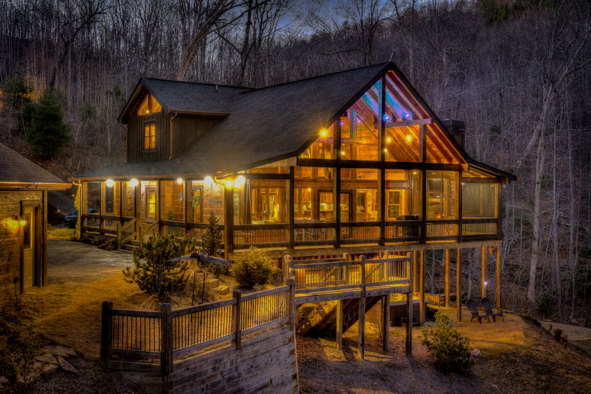
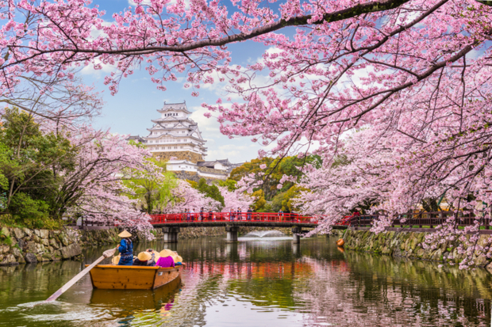
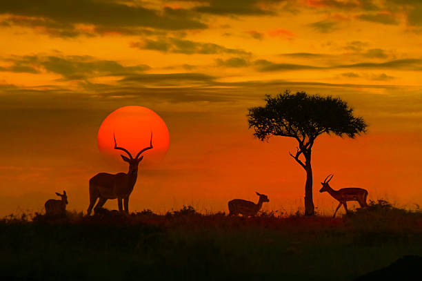
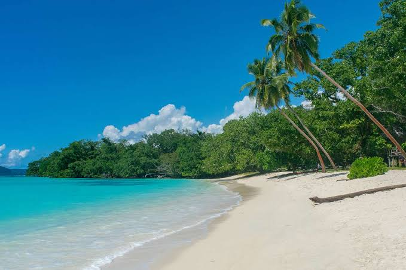

WanderScape
Capturing the world's most breathtaking destinations.
Explore a curated collection of landscapes, cities, wildlife, and hidden gems from around the world. Every photograph tells a story of adventure, culture, and natural beauty.











